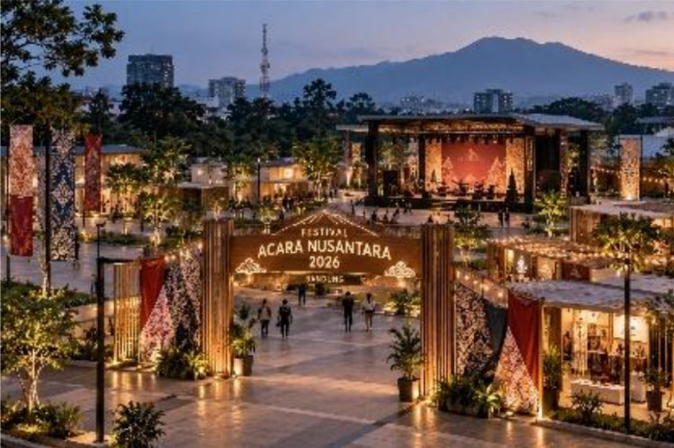

Explore Science, Inspire the Future
Nama Acara: Festival Sains Nusantara 2026
Tema: Explore Science, Inspire the Future
Penyelenggara: Nusantara Science Community
Festival Sains Nusantara 2026 merupakan kegiatan yang menghadirkan seminar, workshop, dan kompetisi sains bagi pelajar, mahasiswa, dan masyarakat umum.

Peserta dapat mengikuti kegiatan eksperimen dan pembelajaran sains secara langsung melalui workshop yang disediakan.
Kompetisi memberikan kesempatan kepada peserta untuk menampilkan ide dan proyek sains mereka.
Seminar menghadirkan pembicara untuk berbagi pengetahuan tentang perkembangan sains dan teknologi terkini.
| Hari | Waktu | Program | Kategori | |
|---|---|---|---|---|
| Sesi | Materi | |||
| Jumat | 08.00-09.00 | Pembukaan | Opening Ceremony | Umum |
| 09.00-11.00 | Workshop | Eksperimen Fisika | Pelajar | |
| 09.00-11.00 | Workshop | Dasar Data Science | Mahasiswa | |
| 11.00-12.00 | Seminar | Teknologi dan Masa Depan | Umum | |
| 13.00-15.00 | Workshop | Robotika Dasar | Pelajar | |
| Sabtu | 08.00-10.00 | Kompetisi | Science Project | Pelajar |
| 08.00-10.00 | Kompetisi | Data Challenge | Mahasiswa | |
| 10.00-12.00 | Seminar | Inovasi Energi | Umum | |
| 13.00-15.00 | Seminar | Kecerdasan Buatan | Umum | |
| Minggu | 08.00-10.00 | Kompetisi | Robotik Nusantara | Pelajar |
| 10.00-12.00 | Penutupan | Closing Ceremony | Umum | |
| Jadwal kegiatan dapat mengalami perubahan sesuai kondisi penyelenggaraan acara. | ||||